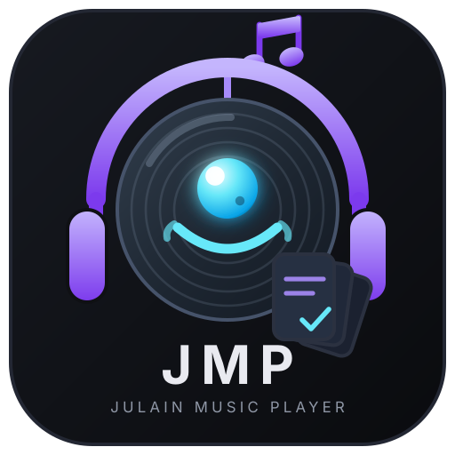

An AI-driven music player: how it is built, how a sentence or a measured sound profile becomes an action, where your data goes, and why almost none of it ever leaves this computer. This page is the technical companion to the README: architecture first, privacy second, honest limits last.
AI / LLM planner Psychoacoustics Local first No telemetry Journalled writes Optional remote planner GPL-3.0-or-later
JMP is an AI-driven, self-hosted music player. It reads a
music folder that already exists, indexes it, plays it through
mpv, and lets you shape it in a chat window: search, queue,
build playlists, rank and reshape by measured
psychoacoustics, read timed lyrics, and record what you like.
The music itself is never uploaded and never rewritten by the chat.
The product has two faces over one engine: a small command line
(music-cli) and a local web window. The window is served by
a Python HTTP server bound to loopback and protected by a random token.
An optional native GTK/WebKit shell, a Chromium --app
window, or a phone browser can all show the same page.
One sentence. A local web app over a journalled library toolkit, with an offline bilingual planner (and an optional fenced OpenAI-compatible planner), that turns a sentence — or a measured sound profile — into an action.
The default planner is a deterministic English/German parser that needs no model and no network. Choosing a planner adds an OpenAI-compatible agent (local Ollama or a remote server) over a fenced tool list: catalogue reads, profile reads and playlist writes — no shell, no paths, no deletes. If a build includes an optional download module, that module adds its own search and import tools. Local Whisper handles lyrics and voice.
Every track is decoded and measured (35 columns: tempo, onsets, pulse clarity, LUFS, dynamics, centroid, flatness, sharpness, harmonicity, roughness, key, major/minor, stereo width, five band shares, attack sharpness). Those become twelve 0..1 axes, five profile sets and eight sound families, all percentiles inside this library.
Moods, durations, superlatives, lyric fragments, artist and album names, import links, settings and maintenance all work as a sentence, in English or German. A lookup only lists; a play word is required before anything starts. Nothing deletes music.
| Intent | Sentences |
|---|---|
| Play / transport | “play Bands”, “play something chill”, “the whole library shuffled”, “pause”, “volume 40”, “continue where I left off” |
| Playlists and queues | “create a smooth playlist for work”, “one hour of metal”, “a playlist with 30 tracks of rock”, “save that as Late Night”, “make a smart playlist of 90s metal”, “make a smart playlist of tracks longer than 8 minutes, shuffled” |
| Sound, mood and rank | “find the slowest and boring song”, “the 10 most aggressive tracks”, “why is this the most aggressive?”, “find music similar to this but faster”, “find something 20 % faster”, “show the timbre profile”, “start a radio from this song” |
| Lyrics | “songs about the sea”, “which song mentions pizza”, “export the lyrics as lrc”, “shift the lyrics half a second later” |
| Library as data | “how many tracks do I have”, “which genres do I have most of”, “what's new”, “is the library healthy”, “show duplicate 3” |
| Playlist import | “import all playlists from ~/Downloads/playlists”, “import this spotify playlist <link>” |
| Download (optional module) | “search for …”, “download 2”, “retry the download” — only in a build that includes a download module |
| Settings and upkeep | “turn off the visualizer”, “keep the last 5 backups”, “index the library”, “pause the indexing”, “measure the library”, “transcribe all songs without lyrics” |
| Feedback and learning | “I like this”, “das gefällt mir”, “when I say sunday I mean chill and jazz” |
The offline parser covers these without a model; an LLM planner is more forgiving of free phrasing but is validated by the same engine before a skill runs. German examples: “spiele etwas Entspanntes”, “mach das Radio an”, “wie viele Lieder habe ich”, “verschiebe die Lyrics um eine halbe Sekunde nach hinten”.
Indexing, search, playback, mood analysis, sound profiles and lyric transcription all run on this machine. The only network calls are the ones you explicitly ask for or configure.
Every tag write, rename, move or playlist change is recorded in
library-work/journal/ and fsynced before the file
changes. Rollback tools read the same journal.
It can create, edit, rename and delete custom playlists (journalled). Audio only enters through a local add, or through an optional download module in a build that includes one, and a delete needs an explicit human decision.
Shelf, mood, focus, psycho and smart playlists are rebuilt from the
inventory. Hand-made lists live in Playlists/Custom/;
ad-hoc queues in Playlists/Own/.
The optional language model may call a fixed list of tools. No tool takes a filesystem path, runs a shell, deletes audio or rewrites a tag. A delete needs a delete word in your own sentence.
Every HTTP route is wrapped: an exception becomes a JSON 500 with the endpoint, the error and the log path, never a dropped socket that the page reports as “Load failed”.
music-cli / desktop entrymusic chat --web--app, or browser
The container mounts the music folder at /library and keeps
the mpv daemon inside it. Nothing of the library is baked into the image.
On a host install the same code runs from a venv. A second launch of the
window is a no-op: the state file names the running server, the PID is
checked and the existing URL is reopened.
| Path | Responsibility |
|---|---|
lib/music.py |
The CLI: play, search, transport, playlists, mood, index, data, chat, shell. It never writes a tag or moves a file itself. |
lib/mpvctl.py |
mpv JSON-IPC client. One headless daemon per socket; the app starts it on demand. |
lib/playlist_edit.py |
Journalled playlist editor: write, append, remove, delete, rename, custom/Own/smart folders, rollback. |
lib/add_file.py |
Copy a local file into the library: tag, journal, move, rollback. |
lib/chat/downloads.py |
Facade for an optional build-time download module: discovery, stub answers when none is installed, and proxies when one is. |
lib/chat/engine.py |
Conversation state and the skill handlers. The only place a plan becomes an action. |
lib/chat/nlu.py |
Offline bilingual (English/German) intent parser. The default planner, and what runs when a model is not configured. |
lib/chat/llm.py |
Optional OpenAI-compatible planner. The agent loop over a fenced tool list, with a JSON-plan fallback. |
lib/chat/tools.py |
The tool surface: catalogue reads, metadata filters, profile reads, playlist writes, and a download module's tools when one is installed. No shell, no paths, no deletes of audio. |
lib/chat/web.py |
The HTTP server, token checks, every /api/* route,
the page, the manifest, the service worker, diagnostics. |
lib/chat/webui/ |
The single-page window: HTML, CSS, vanilla JS. No framework, no CDN, no external font. |
lib/chat/window.py |
The optional native GTK3/GTK4 + WebKit window. Standalone; it imports nothing from the package. |
lib/chat/catalog.py |
Inventory rows, track/playlist resolution, search, stats. |
lib/chat/player.py |
Playback with errors a conversation can show. |
lib/chat/psycho.py |
Read-only reader of the measured sound profiles: axes, similar tracks, families, explanations, five profile sets. |
lib/chat/lyrics.py |
Read-only reader of the lyric database: timed lines, whole-word FTS5 search (plurals yes, substrings no), timing offsets, LRC export. |
lib/chat/*_job.py |
Background jobs: index, profiles, lyrics, library data. One
detached child each, pause/resume through /proc,
progress read from logs. |
lib/skills/<name>/SKILL.md |
Twenty skill descriptions, loaded into the planner's prompt and the chat's help. Data, not code. |
The app is the conversation and the player. The heavy library work —
scanning, tagging, artwork, deduplication, mood features, sound profiles,
the daily backup — lives in the repository's scripts/ folder
and is called as a subprocess or through a small read-only reader. A
plain music folder without scripts/ can still play, search,
use playlists and transcribe lyrics: the local Whisper transcriber ships
with the app in lib/asr/ and installs its own backend into
the library. Tagging new files or re-measuring the library still needs
the library's tools.
| Program | Used for | Runs as |
|---|---|---|
mpv | playback | one headless daemon, JSON IPC on a Unix socket |
ffmpeg / ffprobe |
probing, decoding, waveform and spectrum, mood and profile measurements, import checks | subprocess |
| optional import module | search and audio import — only in a build that adds the module; the open package contains no module | separate build-time package |
| faster-whisper | local lyric and voice transcription | own ASR venv, subprocess |
docker/podman |
the container launcher | installer and wrapper |
| SongRec | optional Shazam confirmation used by some library reports | subprocess, not bundled with the app |
POST /api/chat{message} with the token.Engine._execute): mood names and
weights are clamped, counts and lengths bounded, a seed must resolve
to a real library track, and a “lookup” without a playback word is
downgraded to a search so a model cannot start music by accident.playlist_edit inside at_root(), so the
journal line exists before the file.<img onerror=…> is shown as text.
A track is always a rel path the catalogue already knows;
the page never sends an absolute path. A playlist click hands the
.m3u8 to mpv, which resolves the relative entries. “Continue
where I left off” rebuilds the queue from the session file and seeks to
the remembered second.
The footer chips start real work without a terminal: re-index the
inventory, measure sound profiles, transcribe lyrics, back up the two
databases, or — in a build with a download module — run its download
queue. Each job is one detached child
with start_new_session=True, a record under
library-work/app/<area>/jobs/, a log and an exit-code
file. Pause is SIGSTOP, resume SIGCONT, cancel
SIGCONT + SIGTERM to the process group; a
finished child is reaped instead of looking alive forever.
Jobs write databases, reports and generated playlists. They do not edit music files and they delete nothing. The one exception is the explicit, journalled playlist editor.
The music folder is the root. Everything JMP adds is inside it, so a backup of the folder is a backup of the app's memory too.
| Path | What it holds | Rebuildable? |
|---|---|---|
library-work/inventory/ |
One JSONL row per audio file: tags, technical data, flags, paths. The catalogue and the statistics read this, not the audio. | yes (rescan) |
library-work/journal/ |
Append-only record of every tag write, move, rename, artwork change, playlist write, deletion and import. The rollback source. | no — keep it |
library-work/app/chat/ |
Learned taste, notes, phrases, recent plays, settings, secrets, session, radio state, voice clips (deleted after use), server state, logs. | partly |
library-work/app/psycho/features.db |
35 measurements per song, twelve psychology axes, five profile sets, eight sound families. | yes (expensive) |
library-work/app/lyrics/lyrics.db |
Timed lyric lines and an FTS5 index. | yes (expensive) |
library-work/app/library-data/ |
Audio fingerprints and the daily plain-text export
(LibraryData/*.jsonl) plus database backups. |
yes |
library-work/reports/ |
Readable and machine-checked reports: quality, albums, artwork, duplicates, moods, profiles, franchise moves. | yes |
Playlists/ |
Shelf, mood, focus, psycho and smart lists (generated), plus
Custom/ (yours) and Own/ (ad-hoc
queues). | generated ones yes |
LibraryData/ |
A daily JSONL copy of the profiles, sets, families and lyric lines, matched by an audio fingerprint rather than a file name. | yes |
Fingerprints, not file names. The daily export links
a record to a file by a SHA-256 of the coded audio packets
(ffmpeg -c copy -f streamhash), so a tag write or a rename
does not break the link. The hash covers no tags, no cover art and no
file name, and it is never sent anywhere.
The server binds 127.0.0.1 (the container publishes
only 127.0.0.1:8765) and generates
secrets.token_urlsafe(18) per start. Every request is
compared with hmac.compare_digest.
Every response sets Cache-Control: no-store. The page
and every /api/* answer need the token; only the static
shell and /sw.js are public.
/static/<file> accepts only
[A-Za-z0-9_.-]+, so a path traversal never reaches the
filesystem.
Diagnostics record the path without its query string. The test suite asserts that a token never appears in a log file.
No tool accepts a path, a URL fetch beyond a download module's
search, a shell command, or a delete. A track is always a
rel the catalogue knows.
The planner may write a custom playlist, and — with a download module — start an import. Both are journalled. It cannot move, retag or delete audio.
What the token is not. It separates the app from
other pages and casual local processes, not from a process running as
your user. That process can read
library-work/app/chat/server.json and the token in it.
The connection is plain HTTP on loopback; do not expose the port to a
LAN without a reverse proxy and TLS.
The short version. Your audio, tags, lyrics, sound profiles and listening history stay in the music folder. JMP has no account, no telemetry, no analytics and no crash reporting. Nothing is sent anywhere unless you configure a remote planner, use a download module's import, or let a library tool fetch artwork or a Whisper model.
| Feature | What is sent | To whom | Default |
|---|---|---|---|
| Remote planner | Your chat sentence, the skill descriptions, and the JSON the read-only tools return (titles, artists, albums, genres, playlist names, measured axis values). No audio, no file paths, no token. | The OpenAI-compatible base URL you configured (for example GWDG/ SAIA, or any server you name) | off until you choose a provider |
| Local planner (Ollama) | The same text, to a server on 127.0.0.1 or your own
LAN address. |
Your Ollama | off; choose “ollama” to enable |
| Download module (optional) | The search words or the URL, plus the normal HTTP metadata of the module's request. | Whatever service the module talks to | only in a build with a module, and only when you ask |
| Lyrics and voice | The audio is decoded locally. On the first run
faster-whisper may download a model from Hugging
Face; after that no audio or text leaves. |
Hugging Face (model download only) | model download once |
| Artwork tools (repository scripts) | Artist, album and track names, to look up a cover. | MusicBrainz, Cover Art Archive, iTunes, Deezer | only when that tool is run |
| SongRec / Shazam (optional, not the app) | A short audio fingerprint. | Shazam | only in the helper reports |
| Package install | Normal package manager and container registry traffic. | Your distribution, Docker Hub, PyPI | during install/update |
library-work/app/chat/.session.json, so “Continue” works.settings.json,
and an API key in secrets.json with mode 0600.
The key is never echoed back to the page or the API.There is nothing to sign in to and no user identifier.
No usage counters, no “phone home”, no crash upload.
The page loads no third-party script, font, pixel or CDN asset.
The service worker caches only /static/app.css,
/static/app.js and the icon. It never caches the page or an
API answer, because both carry live library data and the token.
A recorded clip is written to a temporary file under the app state,
transcribed by the local ASR interpreter, and unlinked in a
finally block — success, failure or timeout alike. It never
becomes a lyric row, and with autosend off it only fills the prompt for
you to correct.
mtime. A tagging or
rename pass makes old files look new, and the answer says so.http://<LAN-IP> does not qualify.Leave use_llm off (the default) or point
llm_provider at a local Ollama. Install no download
module. Everything else — search, playlists, playback, profiles,
lyrics, statistics — works without a network.
Settings → the eight tabs, or simply ask: “show the settings”, “turn off the visualizer”, “keep the last 5 backups”. One registry decides every default, choice and alias.
The taste profile, session, radio state, caches and databases are
ordinary files under library-work/app/. Remove them while
the app is stopped; the music is untouched.
library-work/journal/ is the rollback record. It is
also the honest history of what the tools did. Back it up with the
rest of the folder.
Settings → Library data writes a plain-text daily JSONL of profiles and lyrics, matched by audio fingerprint, and can import it again after a rename or a reinstall.
The window is vanilla HTML/CSS/JS over documented JSON routes. The
playlists are ordinary .m3u8 files. The databases are
SQLite. The source is GPL-3.0-or-later.
Where to read more:
README for install and use,
licences.md for the dependency audit and the
release answer,
logo-jmp.svg for the mascot source,
NOTICE for the copyright line and the AI statement.
The behaviour contracts live in the repository's
AGENTS.md.
Most of this was written with an AI coding agent. The human author set the requirements, chose every behaviour, ran and read the tests, and reviewed each change; the model wrote most of the code, the tests, the documentation and the hand-drawn SVG mascot. It was a tool, not an author — and the project says so rather than hiding it, because it changes how much trust to place in experimental software.
Two consequences worth knowing. Copyright in model output is unsettled: in several jurisdictions a model's text alone cannot be copyrighted, so the human author claims the selection, arrangement, direction and review they actually contributed, and releases that under the GPL. And a model cannot maintain the project or answer an issue — the human author does. The full statement, including what was and was not copied from elsewhere, is in NOTICE and licences.md §8.
Every feature came from a written requirement; the agent proposed, the human accepted or rejected, and the test suite is the referee.
Dependencies are libraries
or separate programs with their own licences — never copied source
trees. The in-process mutagen import is why the project
is GPL.
The GPL disclaimer applies in full. AI-assisted code can be confidently wrong; the journals exist so a wrong write can be taken back.